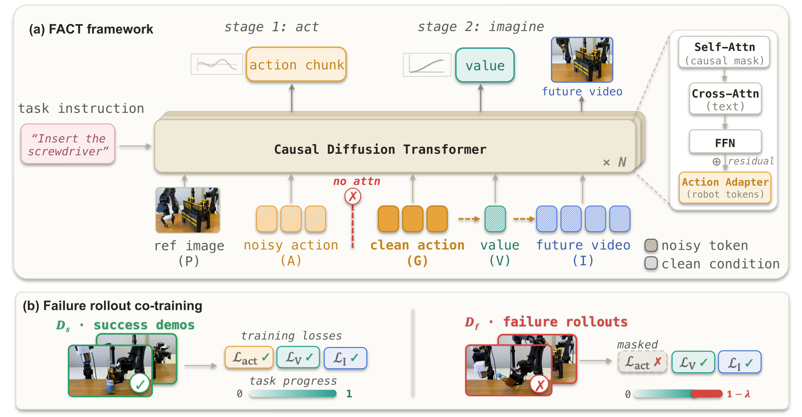
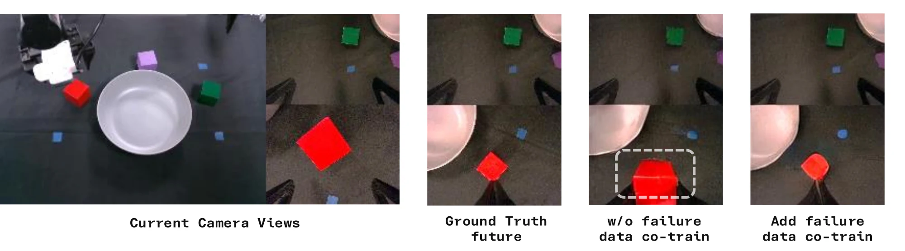

Overview
Recent world-action models (WAMs) show that co-training policies with future prediction can provide physical priors for action generation. Building on the future-prediction ability of video models, many WAMs generate future videos and recover actions with inverse-dynamics models, or use these predicted videos as goal conditions for action generation. In both cases, the world model is trained mostly on successful demonstrations and has little reason to predict the consequences of bad actions. We introduce FACT, a causal World-Action Model that predicts future video and task progress conditioned on the executed action. This action-conditioned interface allows failure rollouts to supervise action consequences, turning bad actions into valid future targets rather than being discarded. Failure-aware training makes the progress predictor aware of both successful and failed action outcomes, which can optionally be used to score sampled action candidates at inference. Extensive experiments on simulation and real-world bimanual manipulation tasks show that FACT outperforms many existing baselines, improves as failure data are incorporated into training, and reduces success-biased future hallucination under bad actions.
Method
One causal diffusion transformer — act, then imagine.

Act, then imagine
Value and future video condition on the clean action G — the noisy action slot A never sees it, so future prediction sharpens action generation without leaking targets.
Failures teach consequences
Failure rollouts mask the action-imitation loss but still supervise the observed failed future and a lowered progress value — consequences, not behavior.
Optional action scoring
Trained on failed outcomes, the value head becomes action-sensitive and can rank N sampled candidates at deployment for extra reliability.
Real-world Experiment
Results

BibTeX
@article{peng2026fact,
title = {FACT: Failure-Aware Causal Training for World-Action Models},
author = {Peng, Quanquan and Liang, Yutong and Yan, Rui and Hansen, Nicklas and Wang, Xiaolong},
journal = {arXiv preprint},
year = {2026}
}